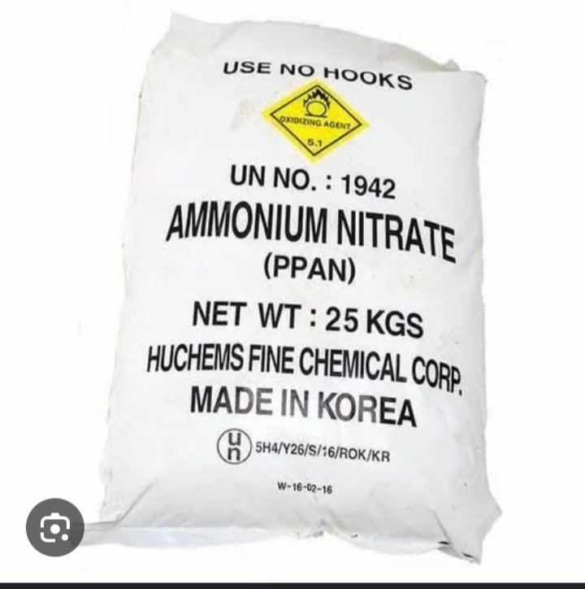
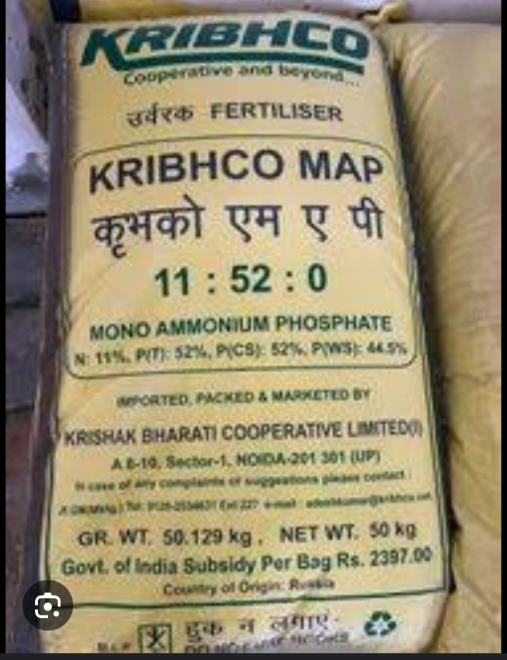

Onions
Market Price: ₹20 - ₹40 per kg
Winter
Soil: Sandy loam soil

Ammonium Nitrate
Rs 1950 per Bag
Use for vegetative growth, leaf development, and overall plant vigor
Content:
1. Nitrogen (N): 34%
2. Phosphorus (P): 0%
3. Potassium (K): 0%
Fertilizer

Mono-Ammonium Phosphate
Rs 1250 per Bag
Use for root development, flowering, and boll formation in cotton plants
Content:
1. Nitrogen (N): 11%
2. Phosphorus (P): 52%
3. Potassium (K): 0%
Fertilizer